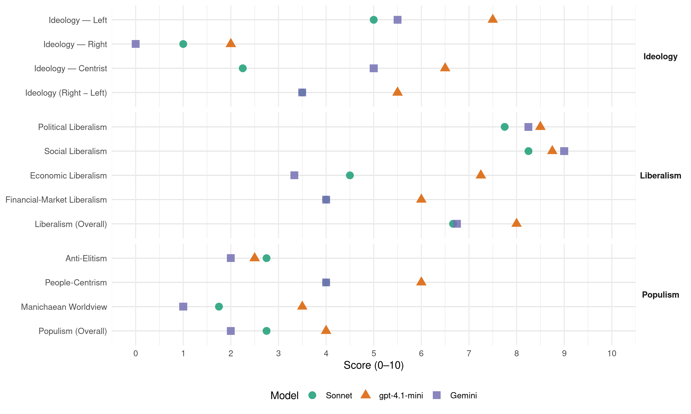

SSW (Germany, 2025)
manifesto_id 41912_202502
Get full text: This site shows derived annotations and short verbatim quotes only. The full manifesto text is © Manifesto Project / WZB — obtain it via manifesto-project.wzb.eu using the manifesto_id above.
Headline scores
| Dimension | Sonnet | gpt-4.1-mini | Gemini |
|---|---|---|---|
| Populism (Overall) | 2.8 | 4.0 | 2.0 |
| Anti-Elitism | 2.8 | 2.5 | 2.0 |
| People-Centrism | 4.0 | 6.0 | 4.0 |
| Manichaean Worldview | 1.8 | 3.5 | 1.0 |
| Ideology (Right − Left) | 3.5 | 5.5 | 3.5 |
| Liberalism (Overall) | 6.7 | 8.0 | 6.8 |
| Political Liberalism | 7.8 | 8.5 | 8.2 |
| Social Liberalism | 8.2 | 8.8 | 9.0 |
| Economic Liberalism | 4.5 | 7.2 | 3.3 |
| Financial-Market Liberalism | 4.0 | 6.0 | 4.0 |
Evidence per dimension
Economic Liberalism
Gemini · score 3.0 · verified · chunk 1
“nicht unkontrolliert dem Markt überlassen”
Hier erwarten wir eine stärkere Regulierung, der Ausbau darf nicht unkontrolliert dem Markt überlassen werden.
Gemini · score 4.0 · mixed · chunk 2
“faire Wettbewerbsbedingungen erhalten”
strukturpolitischen Rahmenbedingungen so setzen, dass kleinere und mittlere Unternehmen faire Wettbewerbsbedingungen erhalten. Wir wollen eine nachhaltige Wirtschaftstransformation
Gemini · score 3.0 · verified · chunk 3
“nicht an private, marktwirtschaftlich arbeitende Unternehmen”
sind Aufgaben, die nicht an private, marktwirtschaftlich arbeitende Unternehmen ohne staatliche Kontrolle und Einflussmöglichkeiten abgegeben werden dürfen.
Gemini · score 4.0 · verified · chunk 4
“Einhaltung des Mindestlohns in öffentlich geförderten Produktionen”
grenzüberschreitende Kulturarbeit durch den Bund gefördert wird. Sie ist ein Motor für zukunftsweisende Entwicklung und stärkt den Zusammenhalt und den Frieden. Wir wollen die Einhaltung des Mindestlohns in öffentlich geförderten Produktionen. Wir wollen uns für Geschlechtergerechtigkeit
gpt-4.1-mini · score 7.0 · verified · chunk 1
“Wir wollen eine sozial gerechte Ausgestaltung der gesetzlichen Rentenversicherung”
Wir wollen eine sozial gerechte Ausgestaltung der gesetzlichen Rentenversicherung als tragende Säule der Altersvorsorge, um Altersarmut zu verhindern.
gpt-4.1-mini · score 8.0 · verified · chunk 2
“Wir wollen die wirtschafts- und strukturpolitischen Rahmenbedingungen so setzen, dass kleinere und mittlere Unternehmen faire Wettbewerbsbedingungen erhalten”
Wir wollen die wirtschafts- und strukturpolitischen Rahmenbedingungen so setzen, dass kleinere und mittlere Unternehmen faire Wettbewerbsbedingungen erhalten. Wir wollen eine nachhaltige Wirtschaftstransformation, die nicht nur ökonomisches Wachstum fördert, sondern auch soziale Gerechtigkeit und ökologische Nachhaltigkeit gewährleistet.
gpt-4.1-mini · score 7.0 · verified · chunk 3
“Wir wollen das Steuerrecht gerechter machen, indem Großunternehmen und die Vermögendsten durch höhere Beiträge zum Gemeinwesen beitragen”
Wir wollen das Steuerrecht gerechter machen, indem Großunternehmen und die Vermögendsten durch höhere Beiträge zum Gemeinwesen beitragen, damit Menschen mit kleinen oder mittleren Einkommen entlastet werden.
gpt-4.1-mini · score 7.0 · verified · chunk 4
“Wir wollen den Gender-Pay-Gap schließen. Die EU-Richtlinie zur Entgelttransparenz muss im nationalen Recht konsequent umgesetzt werden”
Wir verstehen die Vereinbarkeit von Familie und Beruf nicht als individuelle Herausforderung, sondern als gesellschaftliches Strukturproblem. Es geht um nichts Geringeres als die Frage, wie wir Arbeit, Care-Arbeit und persönliche Entwicklung so gestalten können, dass sie allen Geschlechtern die gleichen Chancen erlauben. Für uns sind flexible Arbeitsmodelle, eine partnerschaftliche Aufteilung von Familien- und Erwerbsarbeit sowie Rahmenbedingungen, die Selbstverwirklichung jenseits traditioneller Geschlechternormen ermöglichen, unabdingbar für eine moderne und inklusive Gesellschaft. Wir wollen den Gender-Pay-Gap schließen. Die EU-Richtlinie zur Entgelttransparenz muss im nationalen Recht konsequent umgesetzt werden.
Sonnet · score 4.0 · verified · chunk 1
“Gesundheit darf keine Ware sein”
Gesundheit darf keine Ware sein. Gesundheitsversorgung und Pflege dürfen kein Produkt des Marktes sein.
Sonnet · score 5.0 · mixed · chunk 2
“Bürokratieabbau endlich voranbringen”
Wir wollen den Bürokratieabbau endlich voranbringen. Dazu wollen wir eine Aufgabenkritik der Verwaltung und eine Überprüfung der Auflagen, Nachweispflichten und Antragsvoraussetzungen für Unternehmen
Sonnet · score 4.0 · mixed · chunk 3
“Aufgaben der Daseinsvorsorge nicht weiter privatisiert werden”
Wir wollen, dass Aufgaben der Daseinsvorsorge nicht weiter privatisiert werden. Dazu gehört für uns auch die Gesundheitsvorsorge.
Sonnet · score 5.0 · verified · chunk 4
“volkswirtschaftliche Potenzial”
begrenzen individuelle Entfaltungsmöglichkeiten, schmälern das volkswirtschaftliche Potenzial und unterstützen traditionelle Geschlechterrollen.
Financial-Market Liberalism
Gemini · score 4.0 · verified · chunk 3
“Finanztransaktionssteuer für sämtliche Umsätze am Wertpapiermarkt”
Wir wollen, dass mindestens in der EU eine Finanztransaktionssteuer für sämtliche Umsätze am Wertpapiermarkt erhoben wird.
gpt-4.1-mini · score 6.0 · verified · chunk 3
“Wir wollen, dass mindestens in der EU eine Finanztransaktionssteuer für sämtliche Umsätze am Wertpapiermarkt erhoben wird”
Wir wollen, dass mindestens in der EU eine Finanztransaktionssteuer für sämtliche Umsätze am Wertpapiermarkt erhoben wird. Sollte eine EU-weite Finanztransaktionssteuer nicht möglich sein, befürworten wir die Einführung dieser Steuer auf nationaler Ebene.
Sonnet · score 4.0 · verified · chunk 1
“schwedische Rentenmodell mit seiner Kombination aus Umlagefinanzierung und Kapitaldeckung”
prüfen, ob das schwedische Rentenmodell mit seiner Kombination aus Umlagefinanzierung und Kapitaldeckung auch in Deutschland eingeführt werden kann
Sonnet · score 5.0 · verified · chunk 2
“Elementarschadenversicherung soll verpflichtender Bestandteil”
Diese Elementarschadenversicherung soll verpflichtender Bestandteil der Gebäudeversicherungen werden – wer eine Gebäudeversicherung abschließt, muss damit auch eine Elementarschadenversicherung bekommen.
Sonnet · score 3.0 · verified · chunk 3
“Finanztransaktionssteuer für sämtliche Umsätze am Wertpapiermarkt”
Wir wollen, dass mindestens in der EU eine Finanztransaktionssteuer für sämtliche Umsätze am Wertpapiermarkt erhoben wird. Sollte eine EU-weite Finanztransaktionssteuer nicht möglich sein, befürworten wir die Einführung dieser Steuer auf nationaler Ebene.
Political Liberalism
Gemini · score 8.0 · verified · chunk 1
“Frieden, soziale Gerechtigkeit, Demokratie und Menschenrechte”
Finanzpolitik nicht auf Kosten der Schwächsten - Eine Europäische Union, die nationale Minderheiten schützt und fördert - Frieden, soziale Gerechtigkeit, Demokratie und Menschenrechte müssen die Säulen
Gemini · score 7.0 · verified · chunk 2
“Beteiligungs- und Klagerecht nicht eingeschränkt”
kürzer und effektiver sein. Gleichzeitig darf das Beteiligungs- und Klagerecht nicht eingeschränkt werden, der Umweltschutz und die individuellen
Gemini · score 9.0 · verified · chunk 3
“demokratische Kontrolle der Bundeswehr als parlamentarische Aufgabe”
Die Bundeswehr ist eine Parlamentsarmee; wir nehmen die demokratische Kontrolle der Bundeswehr als parlamentarische Aufgabe sehr ernst.
Gemini · score 9.0 · verified · chunk 4
“bekennen uns ausdrücklich zur repräsentativen Demokratie”
Demokratische Teilhabe in einer sozialen Gemeinschaft Wir bekennen uns ausdrücklich zur repräsentativen Demokratie. Die von den Bürger:innen gewählten
gpt-4.1-mini · score 8.0 · verified · chunk 1
“Demokratie lebt vom Mitmachen”
Nordisches Demokratieverständnis: Demokratie lebt vom Mitmachen. Wir wollen, dass die Beteiligungsmöglichkeiten von Abgeordneten nationaler Minderheiten im Bundestag stärken.
gpt-4.1-mini · score 8.0 · verified · chunk 2
“Wir wollen eine weitgehende Digitalisierung von Verwaltungsprozessen auf allen staatlichen Ebenen”
Wir wollen eine weitgehende Digitalisierung von Verwaltungsprozessen auf allen staatlichen Ebenen, um einen besseren Service zu leisten und mehr Transparenz herzustellen. Dabei darf der Datenschutz nicht vernachlässigt werden.
gpt-4.1-mini · score 9.0 · verified · chunk 3
“Wir wollen, dass die Werte der Europäischen Union innerhalb und außerhalb ihrer Grenzen geschützt, gefördert und verteidigt werden”
Die EU muss sich aktiv dafür einsetzen, diese Werte sowohl innerhalb ihrer Grenzen als auch international zu fördern. Wir wollen, dass die Werte der Europäischen Union innerhalb und außerhalb ihrer Grenzen geschützt, gefördert und verteidigt werden.
gpt-4.1-mini · score 9.0 · verified · chunk 4
“Wir bekennen uns ausdrücklich zur repräsentativen Demokratie”
zu stärken. Bürgerräte sind eine sinnvolle Ergänzung zu unserer repräsentativen Demokratie. Demokratische Teilhabe in einer sozialen Gemeinschaft Wir bekennen uns ausdrücklich zur repräsentativen Demokratie. Die von den Bürger:innen gewählten Volksvertreter:innen verabschieden Gesetze und weitere Normen für alle Menschen in Deutschland. Deshalb ist es wichtig, dass weitere Teile unserer Gesellschaft die Chance zur demokratischen Teilhabe bekommen.
Sonnet · score 7.0 · verified · chunk 1
“Frieden, soziale Gerechtigkeit, Demokratie und Menschenrechte”
Frieden, soziale Gerechtigkeit, Demokratie und Menschenrechte müssen die Säulen der deutschen Außenpolitik sein
Sonnet · score 7.0 · verified · chunk 2
“Beteiligungs- und Klagerecht nicht eingeschränkt werden”
Gleichzeitig darf das Beteiligungs- und Klagerecht nicht eingeschränkt werden, der Umweltschutz und die individuellen Rechte Betroffener müssen gewährt bleiben.
Sonnet · score 8.0 · verified · chunk 3
“direktes Gesetzesinitiativrecht für das Europäische Parlament”
Wir wollen ein direktes Gesetzesinitiativrecht für das Europäische Parlament. Als einziges vom Europäischen Volk gewähltes EU-Organ vertritt es die Interessen der europäischen Bürger:innen.
Sonnet · score 9.0 · verified · chunk 4
“unsere liberale Demokratie gefährden”
dürfen wir nicht blind gegenüber Positionen und Verhaltensweisen sein, die unsere liberale Demokratie gefährden. Demokratiefeinde erkennt man daran, wie sie mit Minderheiten umgehen.
Liberalism (Overall)
Gemini · score 7.0 · verified · chunk 1
“Gleichbehandlung der Minderheiten in Schleswig-Holstein”
Für uns als Partei der dänischen Minderheit und der friesischen Volksgruppe hat die Gleichbehandlung der Minderheiten in Schleswig-Holstein einen unverändert hohen Stellenwert.
Gemini · score 6.0 · verified · chunk 2
“faire Wettbewerbsbedingungen erhalten”
strukturpolitischen Rahmenbedingungen so setzen, dass kleinere und mittlere Unternehmen faire Wettbewerbsbedingungen erhalten. Wir wollen eine nachhaltige Wirtschaftstransformation
Gemini · score 7.0 · verified · chunk 3
“demokratische Kontrolle der Bundeswehr als parlamentarische Aufgabe”
Die Bundeswehr ist eine Parlamentsarmee; wir nehmen die demokratische Kontrolle der Bundeswehr als parlamentarische Aufgabe sehr ernst.
Gemini · score 7.0 · verified · chunk 4
“unsere liberale Demokratie gefährden”
nicht blind gegenüber Positionen und Verhaltensweisen sein, die unsere liberale Demokratie gefährden. Demokratiefeinde erkennt man daran
gpt-4.1-mini · score 8.0 · verified · chunk 1
“Demokratie lebt vom Mitmachen”
Nordisches Demokratieverständnis: Demokratie lebt vom Mitmachen. Wir wollen, dass die Beteiligungsmöglichkeiten von Abgeordneten nationaler Minderheiten im Bundestag stärken.
gpt-4.1-mini · score 8.0 · verified · chunk 2
“Wir wollen eine nachhaltige Wirtschaftstransformation, die nicht nur ökonomisches Wachstum fördert, sondern auch soziale Gerechtigkeit und ökologische Nachhaltigkeit gewährleistet”
Wir wollen die wirtschafts- und strukturpolitischen Rahmenbedingungen so setzen, dass kleinere und mittlere Unternehmen faire Wettbewerbsbedingungen erhalten. Wir wollen eine nachhaltige Wirtschaftstransformation, die nicht nur ökonomisches Wachstum fördert, sondern auch soziale Gerechtigkeit und ökologische Nachhaltigkeit gewährleistet.
gpt-4.1-mini · score 8.0 · verified · chunk 3
“Wir wollen, dass die Werte der Europäischen Union innerhalb und außerhalb ihrer Grenzen geschützt, gefördert und verteidigt werden”
Die EU muss sich aktiv dafür einsetzen, diese Werte sowohl innerhalb ihrer Grenzen als auch international zu fördern. Wir wollen, dass die Werte der Europäischen Union innerhalb und außerhalb ihrer Grenzen geschützt, gefördert und verteidigt werden.
gpt-4.1-mini · score 8.0 · verified · chunk 4
“Wir bekennen uns ausdrücklich zur repräsentativen Demokratie”
zu stärken. Bürgerräte sind eine sinnvolle Ergänzung zu unserer repräsentativen Demokratie. Demokratische Teilhabe in einer sozialen Gemeinschaft Wir bekennen uns ausdrücklich zur repräsentativen Demokratie. Die von den Bürger:innen gewählten Volksvertreter:innen verabschieden Gesetze und weitere Normen für alle Menschen in Deutschland. Deshalb ist es wichtig, dass weitere Teile unserer Gesellschaft die Chance zur demokratischen Teilhabe bekommen.
Sonnet · score 6.0 · verified · chunk 1
“Demokratie und Menschenrechte müssen die Säulen”
Frieden, soziale Gerechtigkeit, Demokratie und Menschenrechte müssen die Säulen der deutschen Außenpolitik sein
Sonnet · score 6.0 · verified · chunk 2
“Beteiligungs- und Klagerecht nicht eingeschränkt werden”
Gleichzeitig darf das Beteiligungs- und Klagerecht nicht eingeschränkt werden, der Umweltschutz und die individuellen Rechte Betroffener müssen gewährt bleiben.
Sonnet · score 6.0 · mixed · chunk 3
“Niemand darf aufgrund der Herkunft, des sozialen Status, des Geschlechts”
Niemand darf aufgrund der Herkunft, des sozialen Status, des Geschlechts, der Religion, des Alters oder der sexuellen Identität benachteiligt werden.
Sonnet · score 8.0 · verified · chunk 4
“unsere liberale Demokratie gefährden”
dürfen wir nicht blind gegenüber Positionen und Verhaltensweisen sein, die unsere liberale Demokratie gefährden. Demokratiefeinde erkennt man daran, wie sie mit Minderheiten umgehen.
Anti-Elitism
Gemini · score 3.0 · verified · chunk 1
“Entscheidungen in Berlin über unsere Köpfe hinweg”
Wir wussten, dass viele Entscheidungen in Berlin über unsere Köpfe hinweg getroffen und wir zu oft vergessen werden.
Gemini · score 1.0 · verified · chunk 3
“jahrzehntelangen verfehlten und falsch gelenkten EU-Fischereipolitik”
Die scharfen Restriktionen und Quotenregelungen sind ein Ausläufer einer jahrzehntelangen verfehlten und falsch gelenkten EU-Fischereipolitik, die nicht auf Nachhaltigkeit ausgerichtet war.
gpt-4.1-mini · score 2.0 · verified · chunk 1
“Das Hickhack der letzten Monate tat niemandem gut”
Wir stehen vor Neuwahlen. Der SSW ist bereit! Das Hickhack der letzten Monate tat niemandem gut. Wir brauchen jetzt klare Lösungen, keine neuen leeren Versprechen.
gpt-4.1-mini · score 3.0 · verified · chunk 3
“Großunternehmen und die Vermögendsten durch höhere Beiträge zum Gemeinwesen beitragen”
Wir wollen das Steuerrecht gerechter machen, indem Großunternehmen und die Vermögendsten durch höhere Beiträge zum Gemeinwesen beitragen, damit Menschen mit kleinen oder mittleren Einkommen entlastet werden.
Sonnet · score 3.0 · verified · chunk 1
“Entscheidungen in Berlin über unsere Köpfe hinweg”
wir wussten, dass viele Entscheidungen in Berlin über unsere Köpfe hinweg getroffen und wir zu oft vergessen werden
Sonnet · score 2.0 · verified · chunk 2
“Großunternehmen und die Vermögendsten durch höhere Beiträge”
indem Großunternehmen und die Vermögendsten durch höhere Beiträge zum Gemeinwesen beitragen, damit Menschen mit kleinen oder mittleren Einkommen entlastet werden
Sonnet · score 5.0 · verified · chunk 3
“Großunternehmen und die Vermögendsten höher besteuern”
Steuerrecht sozialer gestalten: Großunternehmen und die Vermögendsten höher besteuern, kleine und mittlere Einkommen entlasten
Sonnet · score 1.0 · verified · chunk 4
“Viele junge Menschen fühlen sich von der Politik vergessen”
haben aber gleichzeitig keine direkten Einflussmöglichkeiten. Viele junge Menschen fühlen sich von der Politik vergessen. Vor diesem Hintergrund ist es zwingend notwendig
Ideology — Centrist
Gemini · score 5.0 · verified · chunk 1
“die Anliegen unserer Heimat auf die große Bühne”
Deshalb haben wir gesagt: Wir bringen die Anliegen unserer Heimat auf die große Bühne! Wir kämpfen für eine Politik
gpt-4.1-mini · score 7.0 · verified · chunk 1
“Wir bringen die Anliegen unserer Heimat auf die große Bühne”
Deshalb haben wir gesagt: Wir bringen die Anliegen unserer Heimat auf die große Bühne! Wir kämpfen für eine Politik, die den Norden stark macht, die Minderheiten schützt und dafür sorgt, dass unsere Region lebenswert bleibt.
gpt-4.1-mini · score 6.0 · verified · chunk 3
“Wir wollen eine Gesellschaft, in der alle sich wahrgenommen und zugehörig fühlen”
Diese Entwicklung dürfen wir nicht ignorieren, sondern müssen die konkreten Sorgen ernst nehmen und für eine Gesellschaft kämpfen, in der alle sich wahrgenommen und zugehörig fühlen.
Sonnet · score 2.0 · verified · chunk 1
“regionale Antworten auf die Krisen”
Der SSW steht für regionale Antworten auf die Krisen unserer Zeit. Wir machen Politik für den sozialen Zusammenhalt.
Sonnet · score 2.0 · verified · chunk 2
“öffentlichen Gut. Wir wollen einen öffentlichen Verkehr”
Für uns ist Mobilität ein öffentliches Gut. Wir wollen einen öffentlichen Verkehr, der für alle Menschen zugänglich und bezahlbar ist.
Sonnet · score 2.0 · verified · chunk 3
“stehen für einen modernen und leistungsfähigen Staat”
Wir stehen für einen modernen und leistungsfähigen Staat, der den Menschen die Dienstleistungen und Hilfen anbietet, die sie für das tägliche Leben benötigen.
Sonnet · score 3.0 · verified · chunk 4
“Bürgerräte sind eine sinnvolle Ergänzung”
zu stärken. Bürgerräte sind eine sinnvolle Ergänzung zu unserer repräsentativen Demokratie. Demokratische Teilhabe in einer sozialen Gemeinschaft
Ideology — Left
Gemini · score 6.0 · verified · chunk 1
“Kein Sozialabbau, sondern Daseinsvorsorge für alle”
Das wollen wir im Bundestag erreichen: - Gute Minderheitenpolitik ist Friedenspolitik - Kein Sozialabbau, sondern Daseinsvorsorge für alle
Gemini · score 5.0 · verified · chunk 3
“Großunternehmen und die Vermögendsten höher besteuern”
Steuerrecht sozialer gestalten: Großunternehmen und die Vermögendsten höher besteuern, kleine und mittlere Einkommen entlasten
gpt-4.1-mini · score 8.0 · verified · chunk 1
“Wir stehen für einen solidarischen Wohlfahrtsstaat nach skandinavischem Vorbild”
Kein Sozialabbau, sondern Daseinsvorsorge für alle. Wir stehen für einen solidarischen Wohlfahrtsstaat nach skandinavischem Vorbild. Die starken Schultern können größere Lasten tragen, die stärksten Schultern mehr als bisher beitragen.
gpt-4.1-mini · score 7.0 · verified · chunk 3
“Großunternehmen und die Vermögendsten durch höhere Beiträge zum Gemeinwesen beitragen”
Wir wollen das Steuerrecht gerechter machen, indem Großunternehmen und die Vermögendsten durch höhere Beiträge zum Gemeinwesen beitragen, damit Menschen mit kleinen oder mittleren Einkommen entlastet werden.
Sonnet · score 6.0 · verified · chunk 1
“solidarischen Wohlfahrtsstaat nach skandinavischem Vorbild”
Wir stehen für einen solidarischen Wohlfahrtsstaat nach skandinavischem Vorbild. Die starken Schultern können größere Lasten tragen
Sonnet · score 3.0 · verified · chunk 2
“Steuerrecht gerechter machen, indem Großunternehmen”
indem Großunternehmen und die Vermögendsten durch höhere Beiträge zum Gemeinwesen beitragen, damit Menschen mit kleinen oder mittleren Einkommen entlastet werden
Sonnet · score 6.0 · verified · chunk 3
“Großunternehmen und Superreiche mehr zur Finanzierung des Gemeinwesens beitragen”
Kleinere und mittlere Einkommen wollen wir deutlich entlasten, damit sie wieder mehr von ihrem Geld haben, während z. B. Großunternehmen und Superreiche mehr zur Finanzierung des Gemeinwesens beitragen können und sollen.
Sonnet · score 5.0 · verified · chunk 4
“Gender-Pay-Gap schließen”
Wir wollen den immer noch bestehenden Gender-Pay-Gap schließen. Die EU-Richtlinie zur Entgelttransparenz muss im nationalen Recht konsequent umgesetzt werden.
Ideology (Right − Left)
Gemini · score 4.0 · verified · chunk 1
“Kein Sozialabbau, sondern Daseinsvorsorge für alle”
Das wollen wir im Bundestag erreichen: - Gute Minderheitenpolitik ist Friedenspolitik - Kein Sozialabbau, sondern Daseinsvorsorge für alle
Gemini · score 3.0 · verified · chunk 3
“Großunternehmen und die Vermögendsten höher besteuern”
Steuerrecht sozialer gestalten: Großunternehmen und die Vermögendsten höher besteuern, kleine und mittlere Einkommen entlasten
gpt-4.1-mini · score 6.0 · verified · chunk 1
“Wir bringen die Anliegen unserer Heimat auf die große Bühne”
Deshalb haben wir gesagt: Wir bringen die Anliegen unserer Heimat auf die große Bühne! Wir kämpfen für eine Politik, die den Norden stark macht, die Minderheiten schützt und dafür sorgt, dass unsere Region lebenswert bleibt.
gpt-4.1-mini · score 5.0 · verified · chunk 3
“Großunternehmen und die Vermögendsten durch höhere Beiträge zum Gemeinwesen beitragen”
Wir wollen das Steuerrecht gerechter machen, indem Großunternehmen und die Vermögendsten durch höhere Beiträge zum Gemeinwesen beitragen, damit Menschen mit kleinen oder mittleren Einkommen entlastet werden.
Sonnet · score 4.0 · verified · chunk 1
“solidarischen Wohlfahrtsstaat nach skandinavischem Vorbild”
Wir stehen für einen solidarischen Wohlfahrtsstaat nach skandinavischem Vorbild. Die starken Schultern können größere Lasten tragen
Sonnet · score 2.0 · verified · chunk 2
“Steuerrecht gerechter machen, indem Großunternehmen”
indem Großunternehmen und die Vermögendsten durch höhere Beiträge zum Gemeinwesen beitragen
Sonnet · score 5.0 · verified · chunk 3
“Großunternehmen und Superreiche mehr zur Finanzierung des Gemeinwesens beitragen”
Kleinere und mittlere Einkommen wollen wir deutlich entlasten, damit sie wieder mehr von ihrem Geld haben, während z. B. Großunternehmen und Superreiche mehr zur Finanzierung des Gemeinwesens beitragen können und sollen.
Sonnet · score 3.0 · verified · chunk 4
“Gender-Pay-Gap schließen”
Wir wollen den immer noch bestehenden Gender-Pay-Gap schließen. Die EU-Richtlinie zur Entgelttransparenz muss im nationalen Recht konsequent umgesetzt werden.
Ideology — Right
Gemini · score 0.0 · verified · chunk 1
“pauschale Abschiebungen und ein völkisch-nationalistischer Staat”
Die Nutzung der eigenen Sprache ist ein Menschenrecht. Pauschale Abschiebungen und ein völkisch-nationalistischer Staat basierend auf der Errichtung
gpt-4.1-mini · score 2.0 · verified · chunk 1
“Pauschale Abschiebungen und ein völkisch-nationalistischer Staat”
Pauschale Abschiebungen und ein völkisch-nationalistischer Staat basierend auf der Errichtung eines autochthonen deutschen Volkes, wie es von extremistischen Kräften gefordert wird, gefährdet nicht nur Menschen mit Migrationshintergrund, sondern auch Angehörige der nationalen Minderheiten in Deutschland.
gpt-4.1-mini · score 2.0 · verified · chunk 3
“Nationale Alleingänge und Grenzschließungen der Binnengrenzen sind keine Lösung”
Nationale Alleingänge und Grenzschließungen der Binnengrenzen sind keine Lösung und gefährden den Zusammenhalt der EU.
Sonnet · score 1.0 · verified · chunk 1
“völkisch-nationalistischer Staat”
Pauschale Abschiebungen und ein völkisch-nationalistischer Staat basierend auf der Errichtung eines autochthonen deutschen Volkes… gefährdet nicht nur Menschen mit Migrationshintergrund
Sonnet · score 1.0 · verified · chunk 3
“wollen keine traditionellen Grenzkontrollen direkt an unseren Grenzübergängen”
Wir wollen keine traditionellen Grenzkontrollen direkt an unseren Grenzübergängen. Diese scheinen kaum wirksamer als flexible Hinterland-Kontrollen.
Manichaean Worldview
Gemini · score 1.0 · verified · chunk 1
“Das Hickhack der letzten Monate”
Der SSW ist bereit! Das Hickhack der letzten Monate tat niemandem gut. Wir brauchen jetzt klare Lösungen
gpt-4.1-mini · score 3.0 · verified · chunk 1
“Pauschale Abschiebungen und ein völkisch-nationalistischer Staat”
Pauschale Abschiebungen und ein völkisch-nationalistischer Staat basierend auf der Errichtung eines autochthonen deutschen Volkes, wie es von extremistischen Kräften gefordert wird, gefährdet nicht nur Menschen mit Migrationshintergrund, sondern auch Angehörige der nationalen Minderheiten in Deutschland.
gpt-4.1-mini · score 4.0 · verified · chunk 3
“Populisten und Extremisten, die unsere parlamentarische Demokratie bekämpfen, bekommen Zulauf”
Populisten und Extremisten, die unsere parlamentarische Demokratie bekämpfen, bekommen Zulauf, und auch in der breiten Bevölkerung macht sich zunehmend Unzufriedenheit über unser politisches System breit.
Sonnet · score 2.0 · verified · chunk 1
“leere Versprechen”
Wir brauchen jetzt klare Lösungen, keine neuen leeren Versprechen. Unser Norden braucht eine starke Stimme.
Sonnet · score 1.0 · verified · chunk 2
“Dreck schon wieder einfach unter den Teppich”
Während viele Möglichkeiten der CO2-Vermeidung ungenutzt bleiben, soll der Dreck schon wieder einfach unter den Teppich gekehrt werden.
Sonnet · score 3.0 · verified · chunk 3
“Populisten und Extremisten, die unsere parlamentarische Demokratie bekämpfen”
Populisten und Extremisten, die unsere parlamentarische Demokratie bekämpfen, bekommen Zulauf, und auch in der breiten Bevölkerung macht sich zunehmend Unzufriedenheit über unser politisches System breit.
Sonnet · score 1.0 · verified · chunk 4
“Demokratiefeinde erkennt man daran”
dürfen wir nicht blind gegenüber Positionen und Verhaltensweisen sein, die unsere liberale Demokratie gefährden. Demokratiefeinde erkennt man daran, wie sie mit Minderheiten umgehen.
People-Centrism
Gemini · score 4.0 · verified · chunk 1
“immer nah an den Menschen”
unser Wertekompass zeigt hier wie immer klar Richtung Norden: sozial, regional, umweltbewusst und immer nah an den Menschen.
gpt-4.1-mini · score 7.0 · verified · chunk 1
“Eine Stimme für den SSW ist mehr wert als eine Stimme für jede andere Partei”
Ich sage dann immer: Eine Stimme für den SSW ist mehr wert als eine Stimme für jede andere Partei. Denn der SSW ist die einzige Partei, die sich ausschließlich für Schleswig-Holstein stark macht.
gpt-4.1-mini · score 5.0 · verified · chunk 3
“die arbeitende Mitte der Gesellschaft war und ist allen Wahlversprechen zum Trotz der Lastesel der Gesellschaft”
Die finanzielle Belastung der deutschen Mittelschicht durch Steuern und Sozialabgaben ist erdrückend. Die arbeitende Mitte der Gesellschaft war und ist allen Wahlversprechen zum Trotz der Lastesel der Gesellschaft.
Sonnet · score 5.0 · verified · chunk 1
“Stimme für den Norden”
Deine Stimme für den Norden. Als Minderheiten- und Regionalpartei… für die vielen Menschen, die täglich das Land am Laufen halten
Sonnet · score 3.0 · verified · chunk 2
“Mobilität ist ein Grundbedürfnis der Menschen”
Mobilität ist ein Grundbedürfnis der Menschen im Land, denn sie ermöglicht die Teilhabe am kulturellen und sozialen Leben
Sonnet · score 5.0 · verified · chunk 3
“arbeitende Mitte der Gesellschaft war und ist allen Wahlversprechen zum Trotz der Lastesel der Gesellschaft”
Die finanzielle Belastung der deutschen Mittelschicht durch Steuern und Sozialabgaben ist erdrückend. Die arbeitende Mitte der Gesellschaft war und ist allen Wahlversprechen zum Trotz der Lastesel der Gesellschaft.
Sonnet · score 3.0 · verified · chunk 4
“Die von den Bürger:innen gewählten Volksvertreter:innen”
Wir bekennen uns ausdrücklich zur repräsentativen Demokratie. Die von den Bürger:innen gewählten Volksvertreter:innen verabschieden Gesetze und weitere Normen
Populism (Overall)
Gemini · score 3.0 · verified · chunk 1
“Entscheidungen in Berlin über unsere Köpfe hinweg”
Wir wussten, dass viele Entscheidungen in Berlin über unsere Köpfe hinweg getroffen und wir zu oft vergessen werden.
Gemini · score 1.0 · verified · chunk 3
“jahrzehntelangen verfehlten und falsch gelenkten EU-Fischereipolitik”
Die scharfen Restriktionen und Quotenregelungen sind ein Ausläufer einer jahrzehntelangen verfehlten und falsch gelenkten EU-Fischereipolitik, die nicht auf Nachhaltigkeit ausgerichtet war.
gpt-4.1-mini · score 4.0 · verified · chunk 1
“Eine Stimme für den SSW ist mehr wert als eine Stimme für jede andere Partei”
Ich sage dann immer: Eine Stimme für den SSW ist mehr wert als eine Stimme für jede andere Partei. Denn der SSW ist die einzige Partei, die sich ausschließlich für Schleswig-Holstein stark macht.
gpt-4.1-mini · score 4.0 · verified · chunk 3
“Populisten und Extremisten, die unsere parlamentarische Demokratie bekämpfen, bekommen Zulauf”
Populisten und Extremisten, die unsere parlamentarische Demokratie bekämpfen, bekommen Zulauf, und auch in der breiten Bevölkerung macht sich zunehmend Unzufriedenheit über unser politisches System breit.
Sonnet · score 3.0 · verified · chunk 1
“Entscheidungen in Berlin über unsere Köpfe hinweg”
wir wussten, dass viele Entscheidungen in Berlin über unsere Köpfe hinweg getroffen und wir zu oft vergessen werden
Sonnet · score 2.0 · verified · chunk 2
“arbeitende Mitte der Gesellschaft war und ist”
Die arbeitende Mitte der Gesellschaft war und ist allen Wahlversprechen zum Trotz der Lastesel der Gesellschaft.
Sonnet · score 4.0 · verified · chunk 3
“arbeitende Mitte der Gesellschaft war und ist allen Wahlversprechen zum Trotz der Lastesel”
Die finanzielle Belastung der deutschen Mittelschicht durch Steuern und Sozialabgaben ist erdrückend. Die arbeitende Mitte der Gesellschaft war und ist allen Wahlversprechen zum Trotz der Lastesel der Gesellschaft.
Sonnet · score 2.0 · verified · chunk 4
“Viele junge Menschen fühlen sich von der Politik vergessen”
haben aber gleichzeitig keine direkten Einflussmöglichkeiten. Viele junge Menschen fühlen sich von der Politik vergessen. Vor diesem Hintergrund ist es zwingend notwendig
Social Liberalism